Contents
Data Analysis Vignettes
Here, the analyses presented in Jensen (Submitted) are replicated in full, in order to showcase how the associated analyses were performed using this implementation of the CPR algorithm
load('cp_data.mat');
Task Acquisition: Simultaneous Chains
Jensen and colleagues (2013) reported the results of a transfer of learning between two tasks, one of which was the "simultaneous chain" (or "simchain") task (Terrace, 2005). Jensen (Submitted) reanalyzed some data from that study using the CPR algorithm with a binomial model.
The following example was presented in detail:
d = [1;0;0;0;0;0;0;1;1;1;0;1;1;1;1;1;1;1;1;1;1;1;1;1;1;1;1;1;1;1;1;1;1;0;1;0;1;1;1;0];
[M,P,stats] = CPRBayes((d),'binomial');
M
P
Elapsed time is 0.030696 seconds.
M =
0
7
40
P =
0.1875
0.8676
The model 'M' vector encodes the segmentation of 'd', with a segment 'i', covering the range [M(i)+1:M(i+1)]. In each segment 'i', the estimated parameters are encoded in the parameter vector 'P'. A binomial model is used, so these consist of a single value per segment, the estimated probability.
Additionally, the structure 'stats' contains detailed information about the analysis. Notable among these are 'stats.seg_numer' and 'stats.seg_denom', which report the numerator and denominator of the Bayes Factors for each stage of segmentation, on a log scale. This allows the individual steps of the algorithm to be traced without requiring all of the BFs to be calculated again. For example, here are the BFs for the first segmentation step:
BF = exp(stats.seg_numer(:,1)+stats.seg_denom(:,1)); area(BF)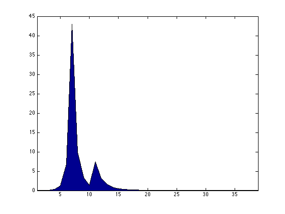
These values already take into consideration the act of averaging and the Schwarz-Bayes correction for small sample bias, so their sum provides the overall Bayes Factor used to evaluate whether to identify a change-point. Since the analysis used a default criteron of 10 (which we can see because stats.threshold == 10), and since sum(BF) = 81.3977, we may say that there is good evidence for a change-point.
The highest peak in BF is selected as the cp, which in this case corresponds to the interval between trial 7 and trial 8. Addtionally, because BF is taken to estimate the sampling distribution of the distribution of possible change-points, it is also used to set a confidence interval for the change-point. 'stats.conf' indicates the confidence interval (95% by default), which is estimated to lie between 5.049 and 14.996, a result of the positive skew in BF. Confidence intervals are reported in 'stats.conf_int'; the first and last rows are set to NaN because they correspond to the fenceposts M(1)=0 and M(end)=n. This confidence interval is approximately depicted in red below.
area(BF) hold on CI = [round(stats.conf_int(2,1)) round(stats.conf_int(2,2))]; area(CI(1):CI(2),BF(CI(1):CI(2)),'FaceColor',[1 0 0]) hold off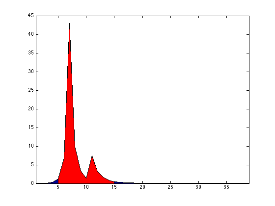
Simchain data originally reported by Jensen and colleagues from one subject are below, consisting of 25 sessions of 40 trials each. In each trial, subjects made between 0 and 5 correct responses, with reward delivery only on trials where the 5th response was reached. change-points were used to determine the point at which subjects had learned the identity of each of the five presented stimuli. Columns in 'simchain_data' correspond to lists, while rows correspond to trials.
d = simchain_data; area(mean(d,2))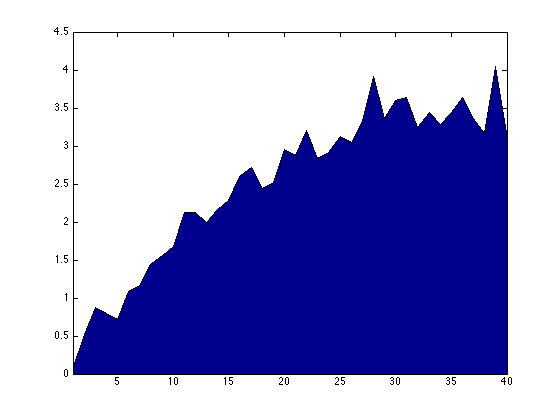
Plotted as a learning curve, this subject makes considerable progress, on average, reaching approximately 4 out of 5 items into the list by the end of the session. This is very misleading, however, because this average does not resemble any of the individual sessions.
ay(1) = subplot(1,4,1);
area(d(:,1))
ay(2) = subplot(1,4,2);
area(d(:,2))
ay(3) = subplot(1,4,3);
area(d(:,3))
ay(4) = subplot(1,4,4);
area(d(:,4))
linkaxes(ay,'y');
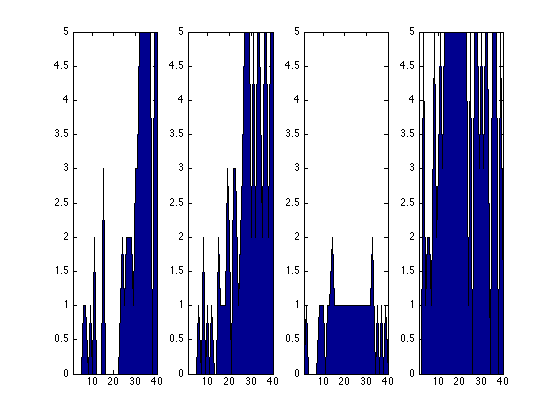 As the above plot shows, sometimes little progress is made, while learning occurs early in other cases. A more subtle result is that it is very uncommon for the subject to get 4 responses correct. Put another way, if the animal makes 4 responses correctly, they are virtually guaranteed to make the 5th.
This can be seen in the histograms depicting the transition time from learning each item to learning the next, as determined using the CPR algorithm. Notice that 'messages' is set to 'off' to suppress the 125 resulting reports, and that 'weight' is used to rule out learning prior to informative feedback.
subplot(1,1,1); result = zeros(25,5); for i = 1:25 weight = ones(39,1); %All weights begin at 1.0 for j = 1:5 fdex = find(d(:,i)>=j,1); %Responses before the first feedback about an item have weights of zero. if j > 1 if fdex < result(i,j-1) fdex = result(i,j-1); %Responses before the previous item is learned have weights of zero. end end if fdex > 1 weight(1:fdex-1) = 0; end [M,P,~] = CPRBayes((d(:,i)>=j),'binomial','messages','off','weight',weight); if length(M) > 2 result(i,j) = M(2); %If a change is detected, it is identified as the learning trial else if P > 0.5 result(i,j) = find(weight==1,1); % If no change is detected, but the overall response rate exceeds 50%, learning is assumed to occur on the first successful press else result(i,j) = nan; %Otherwise, learning did not occur end end end end ax(1) = subplot(5,1,1); hist(result(:,1),0:38); ax(2) = subplot(5,1,2); hist(result(:,2)-result(:,1),0:38); ax(3) = subplot(5,1,3); hist(result(:,3)-result(:,2),0:38); ax(4) = subplot(5,1,4); hist(result(:,4)-result(:,3),0:38); ax(5) = subplot(5,1,5); hist(result(:,5)-result(:,4),0:38); linkaxes(ax,'x');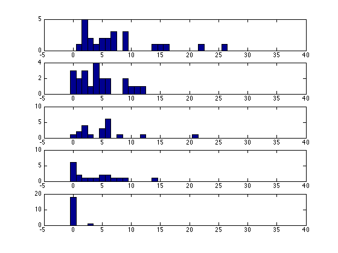
Curve Fitting: Reaction Times
These reaction time data were originally published b Palmeri (1997), but were subsequently made available by Heathcote, Brown, & Mewhort (2000) vis the Newcastle Cognition Lab Data Repository (http://www.newcl.org/?q=node/7).
The raw data consist of the reaction times 'react_data', and the regressors 'react_ivs'; the latter consist of a column of ones, a column of trial numbers, and a column of dots-per-stimulus.
subplot(1,1,1)
d = react_data;
scatter3(react_ivs(:,2),react_ivs(:,3),react_data,15,react_data,'fill'); view(36,44)
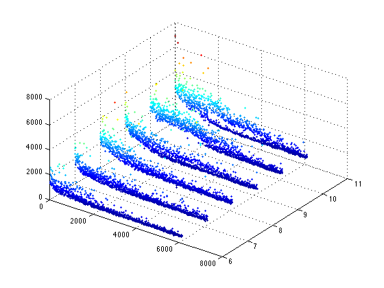 An analysis of these data, presented by Jensen (Submitted), begins by modeling the relationship between time and stimulus complexity as a linear fit with independent factors.
In order to fit these, the regressor relating to time is set as the 'timestaps' parameters, while react_ivs is set as the 'regressors' parameter.
[M,P,~] = CPRBayes(d,'linear','timestamps',react_ivs(:,2),'regressors',react_ivs); M
Elapsed time is 23.8384 seconds.
M =
0
442
2266
3850
5196
6132
The resulting analysis yields 5 change-points, whose positions are encoded in the M vector. The regression parameters for each segment are encoded in the P matrix. Once again, additional information is encoded in the 'stats' struct. When fit to the original data, these take the form of a set of lines, but are better understood as 2D planar surfaces.
d_fit = zeros(length(d),1); for i = 1:length(M)-1 d_fit(M(i)+1:M(i+1)) = sum((react_ivs(M(i)+1:M(i+1),:).*repmat(P{i,1}',M(i+1)-M(i),1)),2)'; end scatter3(react_ivs(:,2),react_ivs(:,3),d_fit,15,d_fit,'fill'); view(36,44)
Including an interaction term yields almost identical results, albeit with a slightly better fit to the data.
react_ivs2 = [react_ivs react_ivs(:,2).*react_ivs(:,3)]; [M,P,~] = CPRBayes(d,'linear','timestamps',react_ivs(:,2),'regressors',react_ivs2); M d_fit = zeros(length(d),1); for i = 1:length(M)-1 d_fit(M(i)+1:M(i+1)) = sum((react_ivs2(M(i)+1:M(i+1),:).*repmat(P{i,1}',M(i+1)-M(i),1)),2)'; end scatter3(react_ivs(:,2),react_ivs(:,3),d_fit,15,d_fit,'fill'); view(36,44)
Elapsed time is 23.1745 seconds.
M =
0
442
2266
3850
5196
6132
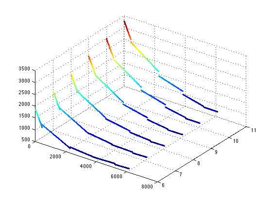 As noted in Jensen (Submitted), this analysis is merey curve-fitting by another name because it intermixes dissimilar cases. Performing further list-wise analyses reveals a variety of different learning patterns. Below is an example for stim 29. An intercept and the timestamps are used as the default regressors because none were specified by the user.
Also plotted is the curved model proposed by Heathcote and colleagues (2000)
q = find(react_list_id==29); d_sub = d(q); iv_sub = react_ivs(q,1:2); [M,P,~] = CPRBayes(d_sub,'linear','timestamps',iv_sub(:,2)); d_fit = zeros(length(q),1); for i = 1:length(M)-1 d_fit(M(i)+1:M(i+1)) = sum((iv_sub(M(i)+1:M(i+1),1:2).*repmat(P{i,1}',M(i+1)-M(i),1)),2)'; end d_heath = -1459 + 4214.77.*exp(-0.000155.*iv_sub(:,2)).*(iv_sub(:,2).^0.0199); scatter(iv_sub(:,2),d_sub); hold on; scatter(iv_sub(:,2),d_fit); hold on; plot(iv_sub(:,2),d_heath,'r'); hold off;
Elapsed time is 0.52722 seconds.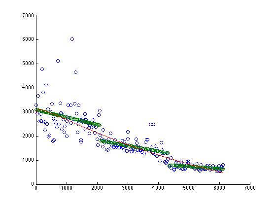
It is not immediately obvious which model minimizes the residuals, or indeed whether the assumption of normality is appropriate for the error in either model. To assess this, the residuals for each of the segments is plotted below, using a kernel density estimate to non-parametrically characterize the error distributions. Consistently, the linear fit yields a tighter and more symmetric distribution of residuals, despite Heathcote's curve having four free parameters.
[f1a,x1a] = ksdensity(d_sub(M(1)+1:M(2))-d_fit(M(1)+1:M(2))); [f1b,x1b] = ksdensity(d_sub(M(1)+1:M(2))-d_heath(M(1)+1:M(2))); [f2a,x2a] = ksdensity(d_sub(M(2)+1:M(3))-d_fit(M(2)+1:M(3))); [f2b,x2b] = ksdensity(d_sub(M(2)+1:M(3))-d_heath(M(2)+1:M(3))); [f3a,x3a] = ksdensity(d_sub(M(3)+1:M(4))-d_fit(M(3)+1:M(4))); [f3b,x3b] = ksdensity(d_sub(M(3)+1:M(4))-d_heath(M(3)+1:M(4))); hold on; subplot(1,3,1) plot(x1a,f1a,x1b,f1b); subplot(1,3,2) plot(x2a,f2a,x2b,f2b); subplot(1,3,3) plot(x3a,f3a,x3b,f3b); hold off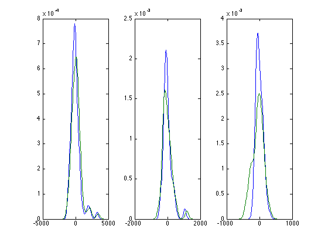
This is contrasts notably with the simultaneous learning, by the same subject, to stim 27. Although Heathcote's model may also be fit to these data, the resulting parameters values (e.g. an intercept of -1500000000000) seem unlikely to have a coherent theoretical interpretation.
subplot(1,1,1) q = find(react_list_id==27); d_sub = d(q); iv_sub = react_ivs(q,1:2); [M,P,~] = CPRBayes(d_sub,'linear','timestamps',iv_sub(:,2)); d_fit = zeros(length(q),1); for i = 1:length(M)-1 d_fit(M(i)+1:M(i+1)) = sum((iv_sub(M(i)+1:M(i+1),1:2).*repmat(P{i,1}',M(i+1)-M(i),1)),2)'; end d_heath = -1500000000000 + 1500000005628.11.*exp(0.00000000000001.*iv_sub(:,2)).*(iv_sub(:,2).^-0.00000000040572); scatter(iv_sub(:,2),d_sub); hold on; scatter(iv_sub(:,2),d_fit); hold on; plot(iv_sub(:,2),d_heath,'r'); hold off;
Elapsed time is 0.43297 seconds.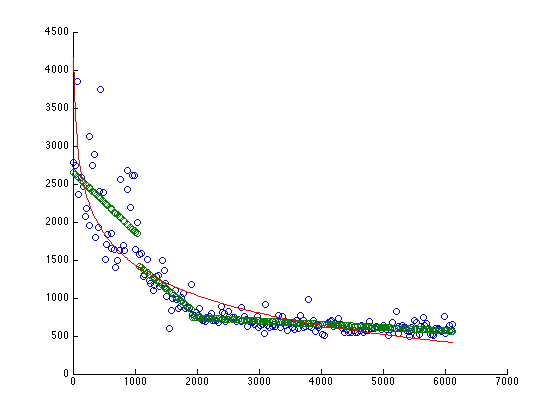
As in the previous case, a comparison of the residuals reveals that, in general the residuals associated with the linear fit are more symmetrical, and less dispersed, particularly in the third segment.
[f1a,x1a] = ksdensity(d_sub(M(1)+1:M(2))-d_fit(M(1)+1:M(2))); [f1b,x1b] = ksdensity(d_sub(M(1)+1:M(2))-d_heath(M(1)+1:M(2))); [f2a,x2a] = ksdensity(d_sub(M(2)+1:M(3))-d_fit(M(2)+1:M(3))); [f2b,x2b] = ksdensity(d_sub(M(2)+1:M(3))-d_heath(M(2)+1:M(3))); [f3a,x3a] = ksdensity(d_sub(M(3)+1:M(4))-d_fit(M(3)+1:M(4))); [f3b,x3b] = ksdensity(d_sub(M(3)+1:M(4))-d_heath(M(3)+1:M(4))); hold on; subplot(1,3,1) plot(x1a,f1a,x1b,f1b); subplot(1,3,2) plot(x2a,f2a,x2b,f2b); subplot(1,3,3) plot(x3a,f3a,x3b,f3b); hold off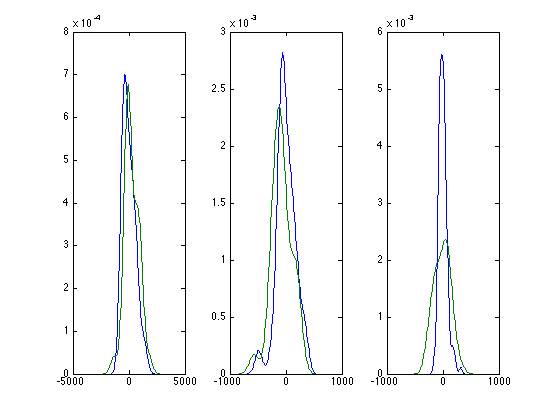
Multivariate Data: 3D Position Tracking
These data, drawn from one 3D sensor in a technical demonstration by Kalu?a et al. (2010), shows how change-point analysis can be used to obtain approximate information not only about position in space, but about abrupt transitions in position.
The analysis of the motion tracking data is more computationally intensive than the preceeding examples, consisting both of a large dataset and of a more complicated calculation. Nevertheless, this still runs efficiently on a modern desktop computer. Below, a multivariate normal model is used, such that transitions are represented by step functions.
d = motion_data; t = motion_time; [M,P,~] = CPRBayes(d,'multivariate normal','timestamps',t);
Elapsed time is 193.4456 seconds.
Zomming in on a section of the resulting model fit, it is clear (1) that the model is tracking the position in 3D space reasonably well, but that it does a poor job describing gradual movement through space, corresponding to parts of the data with a non-zero slope.
d_fit = zeros(size(d,1),3); for i = 1:length(M)-1 d_fit(M(i)+1:M(i+1),:) = repmat(P{i,1},M(i+1)-M(i),1); end subplot(3,1,1) plot(t(M(35)+1:M(45)),d(M(35)+1:M(45),1));hold on plot(t(M(35)+1:M(45)),d_fit(M(35)+1:M(45),1),'r'); hold off subplot(3,1,2) plot(t(M(35)+1:M(45)),d(M(35)+1:M(45),2));hold on plot(t(M(35)+1:M(45)),d_fit(M(35)+1:M(45),2),'r'); hold off subplot(3,1,3) plot(t(M(35)+1:M(45)),d(M(35)+1:M(45),3));hold on plot(t(M(35)+1:M(45)),d_fit(M(35)+1:M(45),3),'r'); hold off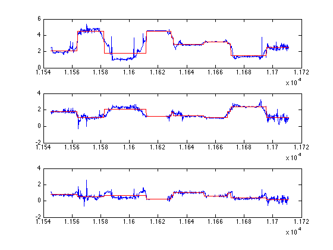
Fitting the three spatial dimensions as a multiple regression yields a much better characterization of the movement through space. Note, however, that this does not constitute a full General Linear Model treatment; instead, each dimension is independently fit the same common pool of regressors. A multivariate General Linear Model has not yet been implemented in package.
[M,P,stats] = CPRBayes(d,'multiple linear','timestamps',t); d_fit = zeros(size(d,1),3); for i = 1:length(M)-1 for j = 1:3 d_fit(M(i)+1:M(i+1),j) = sum((stats.regressors(M(i)+1:M(i+1),:).*repmat(P{i,1}{j}',M(i+1)-M(i),1)),2)'; end end subplot(3,1,1) plot(t(M(33)+1:M(50)),d(M(33)+1:M(50),1));hold on plot(t(M(33)+1:M(50)),d_fit(M(33)+1:M(50),1),'r'); hold off subplot(3,1,2) plot(t(M(33)+1:M(50)),d(M(33)+1:M(50),2));hold on plot(t(M(33)+1:M(50)),d_fit(M(33)+1:M(50),2),'r'); hold off subplot(3,1,3) plot(t(M(33)+1:M(50)),d(M(33)+1:M(50),3));hold on plot(t(M(33)+1:M(50)),d_fit(M(33)+1:M(50),3),'r'); hold off
Elapsed time is 323.0803 seconds.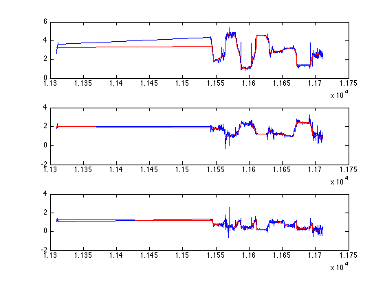
Coal Mining Disasters
The British Coal-Mining Disaster dataset is perhaps the most widely studied data in the change-point literature. It is most commonly reported as the number of days between disasters (Jarrett. 1979), but has also been published in the form of number of disasters per year (Carlin et al., 1992). These two ways of representing the data are nearly identical (with the former being slighlty more informative), and these showcase the inverse relationship between the exponential distribution and the Poisson distribution.
First, the analysis is presented with respect to the slightly more informative exponential representation. The resulting plots show both a histogram of observed responses and the theoretical exponential density function. Note that the diff(expcdf) is used, rather than exppdf, to estimate the frequencies expected in each of the histogram's class intervals.
d = coal_int; [M,P,~] = CPRBayes(d,'exponential'); P subplot(2,1,1) hist(d(M(1)+1:M(2)),0:25:3000); hold on plot(0:25:2975,(M(2)-M(1)).*diff(expcdf((0:25:3000)',P(1))),'r'); hold off subplot(2,1,2) hist(d(M(2)+1:M(3)),0:50:3000); hold on plot(0:50:2950,(M(3)-M(2)).*diff(expcdf((0:50:3000)',P(2))),'r'); hold off
Elapsed time is 0.12431 seconds. P = 114.8280 394.3657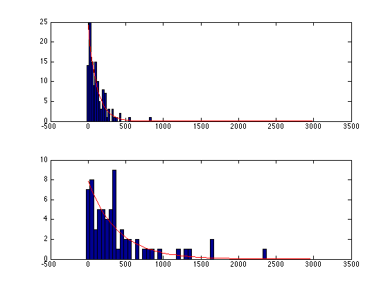
Next, the same data are interpreted in terms of disasers per calendar year, fit to a Poisson model. Notice that the resulting parameter estimates P correspond almost exactly to 365./p_exp, where p_exp represents the parameters obtained using the previously calculated exponential model.
d = coal_cnt; [M,P,~] = CPRBayes(d,'poisson'); P subplot(2,1,1) hist(d(M(1)+1:M(2)),0:8); hold on plot(0:8,(M(2)-M(1)).*poisspdf(0:8,P(1)),'r'); hold off subplot(2,1,2) hist(d(M(2)+1:M(3)),0:8); hold on plot(0:8,(M(3)-M(2)).*poisspdf(0:8,P(2)),'r'); hold off
Elapsed time is 0.072829 seconds.
P =
3.0644
0.9126
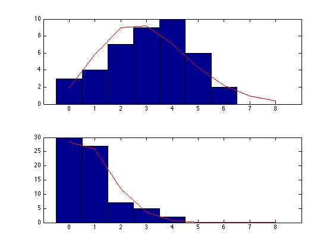 Well Log Data
The 'well log data' made available by Ó Ruanaidh & Fitzgerald (1996) consist of radiometric measurements made during a geological survey, with readings taken at regular intervals as the sensor was gradually lowered into an assay well. Changes detected presumably correspond to different layers of the lithosphere that display different radiometric properties.
This dataset provides an especially good test-bed for change-point analysis because its global properties deviate significantly from the assumptions of a normal model (e.g. in possessing a handful of extreme outliers). The shaded area corresponds to +/1 one standard deviation.
d = well_log_data; [M,P,~] = CPRBayes(d,'normal'); d_fit = zeros(length(d),3); for i = 1:length(M)-1 d_fit(M(i)+1:M(i+1),1) = repmat(P(i,1),M(i+1)-M(i),1); d_fit(M(i)+1:M(i+1),2) = d_fit(M(i)+1:M(i+1),1) + P(i,2); d_fit(M(i)+1:M(i+1),3) = d_fit(M(i)+1:M(i+1),1) - P(i,2); end subplot(1,1,1) fill([(1:length(d))';(length(d):-1:1)'],[d_fit(:,2);d_fit(end:-1:1,3)],'y');hold on; scatter(1:length(d),d,5,'fill'); hold on; plot(1:length(d),d_fit(:,1),'r'); hold off; axis([0 4050 min(d) max(d)])
Elapsed time is 18.7299 seconds.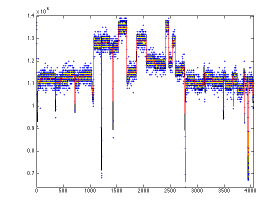
Unlike many of the other data analyzed in this set of examples, the well log data arises from a piece of machinery with highly consistent measurement error. Consequently, it is reasonable to adopt a prior that displays slightly more confidence about the variations in the data. Here, the variation is estimated robustly from the first differences of the data, and a(3) = 1, rather than the default value, a(3) = 0.1. The resulting model is more conservative, because the stronger prior for the variability yields fewer changes detected on the basis of changes in the variance.
a = [median(d) 0.1 1 mad(diff(d),1)*1.4826]; [M,P,~] = CPRBayes(d,'normal','alpha',a); d_fit = zeros(length(d),3); for i = 1:length(M)-1 d_fit(M(i)+1:M(i+1),1) = repmat(P(i,1),M(i+1)-M(i),1); d_fit(M(i)+1:M(i+1),2) = d_fit(M(i)+1:M(i+1),1) + P(i,2); d_fit(M(i)+1:M(i+1),3) = d_fit(M(i)+1:M(i+1),1) - P(i,2); end subplot(1,1,1) fill([(1:length(d))';(length(d):-1:1)'],[d_fit(:,2);d_fit(end:-1:1,3)],'y');hold on; scatter(1:length(d),d,5,'fill'); hold on; plot(1:length(d),d_fit(:,1),'r'); hold off; axis([0 4050 min(d) max(d)])
Elapsed time is 17.5823 seconds.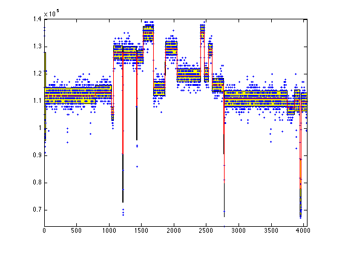
Treasury Bills
The nominal rate of three-month U.S. Treasury bills (or T-bills) is a commonly invoked econometric sample (e.g. Bai, 1997), partly because it provides a continuous measure whose volatility is manageable and partly because the data are available at various levels of granularity. Change-point analyses of these data have often been performed at the monthly level, which is available from the US Federal Reserve (http://www.federalreserve.gov/releases/h15/data.htm). Because they are such a widely-used test-bed for identifying change-points (or, as they are often called in the econometric literature, "structural changes"), they are briefly analyzed here.
d = tbill_data; [M,P,stats] = CPRBayes(d,'linear'); d_fit = zeros(length(d),1); for i = 1:length(M)-1 d_fit(M(i)+1:M(i+1)) = sum((stats.regressors(M(i)+1:M(i+1),1:2).*repmat(P{i,1}',M(i+1)-M(i),1)),2)'; end scatter(tbill_date,d); hold on; plot(tbill_date,d_fit,'r'); hold off; axis([tbill_date(2) tbill_date(end) min(d) max(d)])
Elapsed time is 5.2694 seconds.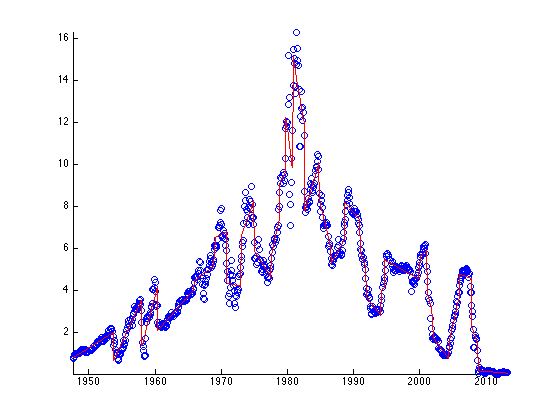
T-bills are routinely analyzed with respect to their first differences, because their volatility is often of considerably greater interest than the rate itself, particularly to forecasters. While small changes in the mean persist (reflecting the overall slope over a period in question), the parameter dominating this analysis is the variance.
d = diff(tbill_data); [M,P,~] = CPRBayes(d,'normal'); d_fit = zeros(length(d),3); for i = 1:length(M)-1 d_fit(M(i)+1:M(i+1),1) = repmat(P(i,1),M(i+1)-M(i),1); d_fit(M(i)+1:M(i+1),2) = d_fit(M(i)+1:M(i+1),1) + P(i,2); d_fit(M(i)+1:M(i+1),3) = d_fit(M(i)+1:M(i+1),1) - P(i,2); end subplot(1,1,1) fill([tbill_date(2:end);tbill_date(end:-1:2)],[d_fit(:,2);d_fit(end:-1:1,3)],'y');hold on; scatter(tbill_date(2:end),d,5,'fill'); hold on; plot(tbill_date(2:end),d_fit(:,1),'r'); hold off; axis([tbill_date(2) tbill_date(end) min(d) max(d)])
Elapsed time is 1.9812 seconds.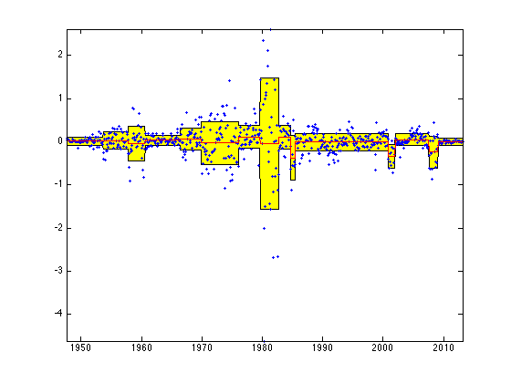
Chaotic Simulated Data
Because the CPR algorithm begins its analysis by evaluating macroscopic features of the data and then recursively re-examines the details of subdivided segments, it performs poorly when small changes are embedded in larger stationary (or cyclic) processes. As an extreme example of this, a dataset was generated in accordance with a Gaussian iterated map (or "mouse map"), as described by Jensen (Submitted) in the supplemental materials.
d = simchaotic_data; [M,P,stats] = CPRBayes(d,'normal'); d_fit = zeros(length(d),1); for i = 1:length(M)-1 d_fit(M(i)+1:M(i+1)) = repmat(P(i,1),M(i+1)-M(i),1); d_fit(M(i)+1:M(i+1),2) = d_fit(M(i)+1:M(i+1),1) + P(i,2); d_fit(M(i)+1:M(i+1),3) = d_fit(M(i)+1:M(i+1),1) - P(i,2); end subplot(1,1,1) fill([(1:length(d))';(length(d):-1:1)'],[d_fit(:,2);d_fit(end:-1:1,3)],'y');hold on; scatter(1:5050,d,5,'fill'); hold on; plot(1:5050,d_fit(:,1),'r'); hold off;
Elapsed time is 9.5568 seconds.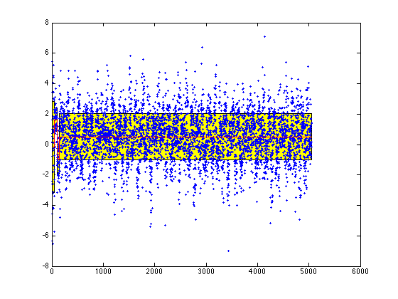
An exploratory solution to this insensitivity is the 'dicing' operation, which is a form of pre-processing that subdivides the data into pieces in order to identify a preliminary set of change-points. These then act as the "initial model" for the full recursive algorithm.
[M,P,stats] = CPRBayes(d,'normal','dice',30); d_fit = zeros(length(d),1); for i = 1:length(M)-1 d_fit(M(i)+1:M(i+1)) = repmat(P(i,1),M(i+1)-M(i),1); d_fit(M(i)+1:M(i+1),2) = d_fit(M(i)+1:M(i+1),1) + P(i,2); d_fit(M(i)+1:M(i+1),3) = d_fit(M(i)+1:M(i+1),1) - P(i,2); end subplot(1,1,1) fill([(1:length(d))';(length(d):-1:1)'],[d_fit(:,2);d_fit(end:-1:1,3)],'y');hold on; scatter(1:5050,d,5,'fill'); hold on; plot(1:5050,d_fit(:,1),'r'); hold off;
Elapsed time is 17.5593 seconds.
Different amounts of dicing yield somewhat different results, so there is not a principled way to interpret the results of the dicing operation. Instead, it provides a relatively rapid test for the stationary distribution problem in large datasets.
A more principled solution is the Forward-Retrospective change-point strategy proposed by Gallistel and colleagues (submitted). Instead of performing a top-down batch analysis, it begins with a small set of data (two observations). Its "forward" operation adds data until a change- point is identified. Then, its "retrospective" operation checks whether the preceding change-point was a false positive given the subsequent data. If, that earlier change-point is eliminated; if not, its position is updated to reflect all of the available data.
[M,P,stats] = CPRBayesForward(d,'normal'); d_fit = zeros(length(d),1); for i = 1:length(M)-1 d_fit(M(i)+1:M(i+1)) = repmat(P(i,1),M(i+1)-M(i),1); d_fit(M(i)+1:M(i+1),2) = d_fit(M(i)+1:M(i+1),1) + P(i,2); d_fit(M(i)+1:M(i+1),3) = d_fit(M(i)+1:M(i+1),1) - P(i,2); end subplot(1,1,1) fill([(1:length(d))';(length(d):-1:1)'],[d_fit(:,2);d_fit(end:-1:1,3)],'y');hold on; scatter(1:5050,d,5,'fill'); hold on; plot(1:5050,d_fit(:,1),'r'); hold off;
Elapsed time is 90.3791 seconds.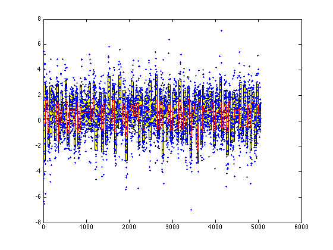
For further details regarding the Forward-Retrospective variant of the CPR algorithm, refer to the supplement of Jensen (Submitted).
References
Bai J (1997) Estimation of a change point in multiple regression models. Review of Economics and Statistics, 79, 551-563.
Carlin BP, Louis TA (2000) Empirical bayes: Past, present, and future Journal of the American Statistical Association, 95, 1286-1289.
Gallistel CR, Krishan M, Liu Y, Miller R, Latham PE (Submitted) The perception of probability.
Heathcote A, Brown S, Mewhort DJK (2000) The power law repealed: The case for an exponential law of practice. Psychonomic Bulletin & Review, 7, 185-207.
Hilborn RC (2001) Chaos and Nonlinear Dynamics. (2nd ed.). Oxford University Press.
Jarrett RG (1979) A note on the intervals between coal-mining disasters. Biometrika, 66, 191-193.
Jensen (Submitted) Closed-form estimation of multiple change-points models.
Jensen G, Altschul D, Danly E, Terrace HS (2013) Transfer of a spatial representation of two distinct serial tasks by rhesus macaques. PLOS ONE, 8, e70825.
Kaluza B, Mirchevska V, Dovgan E, Lustrek M, Gams M (2010) An agent-based approach to care in independent living. In B. de Ruyter et al. (Eds.), Ambient intelligence: First international joint conference, 2010 (pp. 177-186). Springer Berling Heidelberg.
Ó Ruanaidh JJK, Fitzgerald WJ (1996). Numerical Bayesian Methods Applied to Signal Processing. Springer.
Palmeri TJ (1997) Exemplar similarity and the development of automaticity. Journal of Experimental Psychology: Learning, Memory, and Cognition, 23, 324-354.
Terrace HS (2005) The simultaneous chain: A new approach to serial learning. TRENDS in Cognitive Sciences, 9, 202-210.